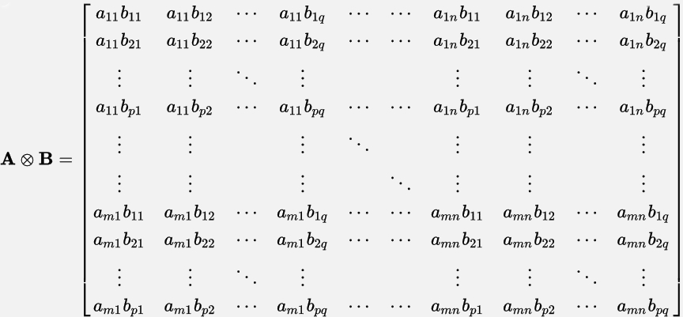

Qumin Tutorial
Getting started with Qumin
Qumin is a minimalistic programming language that aims to provide a simple and open framework for everyone interested in quantum programming to experiment with - from students and researchers that want to implement quantum algorithms like Shor's or Grover's or modify and extend the language, to programmers that want to get a glimpse of what programming a quantum computer might look like. With an open source (still experimental) interpreter already set up, all you need is the latest version of Python 3 and the SciPy stack to get you ready to run your first quantum algorithms.
What follows below is a quick and dirty tutorial of programming in Qumin. We split the guide into to main parts, roughly corresponding to two fragments of the language, the first one dealing with the classical aspects of Qumin and the second one dealing with the features specific to the quantum programming aspect of the language.
Preface. Running a Qumin program
As we'll see below, Qumin is made of 2 "sublanguages": one that handles the classical stuff like definitions,
initialisation etc. and one that handles explicitely quantum operations:
- Classical programs are dynamically typed and have a ".qimp" extension
- Quantum programs are linearly typed and have a ".lqimp" extension
The entry point for a program is always the classical part. Inside this classical part we can load files that contain
definitions of useful classical functions etc. using "--load filename". We can also load quantum programs with "--qload
filename".
To run a file, just call mini.py with the filename as an argument.
I. Classical programming in Qumin
Primitive datatypes and variables
- Integers: 5,-32
- Floats: 0.2, -99.212
- Complex numbers: 1+5i, -3.2-8i
- Strings: "Hello world!"
- Lists: [1 2 3], [[1 0] [5 "hi"]]
Variables, used in the mathematical sense of the world (identifiers bound to immutable values), are defined as such:
let identifier = expression
For example:
let myString = "Hello world!"
let six = (3 + 3)
Remember, once you bind an identifier to an expression, you cannot use the same identifier to bind a different expression!
Functions
Qumin, being a functional language, is based around the concept of functions as the building block of your programs.
Unlike some imperative languages, Qumin's functions are first-class citizens in that they can:
- Be bound to identifiers just as any other expression can
- Be accepted as input and be operated on by other functions, which we call high-level functions
- Be returned as the result of a computation
This means we handle functions just like we handle any other type of data in our language like integers or lists.
Qumin, being based on variants of the lambda calculus, defines functions using the so-called lambda abstractions, or more commonly "anonymous functions", like Python's lambda. For example an anonymous function
that takes an argument and adds 5 to it, is written in Qumin as such:
Anonymous functions can be applied in-line by including arguments in parenthesis as such:
lambda(x,y){
(x + y)
}(3,5)
Which would evaluate to 8.
But it's difficult to do anything complicated with just anonymous functions. Thankfully, as we hinted at previously, we can
just bind a lambda expression to an identifier and so get a handle on our function:
let adder = lambda(x,y){
(x + y)
}
And we can call our new function as adder(5,3).
Another useful thing to remember when playing with functions, is that Qumin supports implicit partial application:
let adder(x,y){
(x + y)
}
let partiallyApplied = adder(10)
partiallyApplied(30)
The last line would evaluate to 40.
What happened here is that, by only supplying one of the two expected arguments, we were given back a new function that looks something like this:
Which name partiallyApplied and call with 30 as an argument.
Finally, specifically in the case of binary functions, we can also call functions in infix notation, inside a pair of parenthesis.
For example
let myOp = lambda(x,y){
(x + (3 * y))
}
(5 myOp 10)
That's the reason we have been parenthesizing arithmetic expressions like (x + y).
All primitive arithmetic functions like +,-,*,/ are defined like any other of Qumin's functions and can be called in the infix style for convenience.
II. Quantum Programming in Qumin
The previous section introduced the classical fragment of Qumin - a simple functional, dynamically typed language suited to general-use classical programming. Quantum programming is the quantum computing analog of classical programming. Quantum programming has various features and rules, often peculiar to our classical understanding, that make programming in its context much different to the one we are used to. Rules like no-cloning and no-deleting of qubits force us to adopt a resource sensitive way of programming. Even things we take for granted in the classical context - like debugging - are difficult to do in a quantum computer. This is because observing our quantum program's state and data can inadverently alter it, as we'll discuss later on. Additionaly quantum computers are still experimental, noisy, and expensive to run - which only adds to the peculiarities above. It would be nice then to have our language help us, in some way, build programs that we can be sure follow the various rules of quantum computing. To this end, we will introduce the quantum fragment of Qumin - equipped with a linear type system built to enforce correctness and help us structure our quantum programs. But first, lets present a quick and informal introduction to quantum computing.
Crash course on quantum programming
Quantum programming can very roughly and informally be summarised by the following four rules:
- 1. States are (normalised) vectors in a special vector space over the complex numbers.
- 2. Their evolution can be described via a specific class of operators (i.e functions on the aforementioned vector space).
- 3. States can be measured in specific ways to obtain results.
- 4. States can be composed in a specific way.
Even if you don't get the more math-y concepts above, don't fret! As you'll see later on, these seemingly abstract rules have very concrete and hands-on implications for programming. In the following subsections we will focus on each specific rule and explore what it means for programming in practice.
Rule 1: Qubits
Let's start with the first rule. Just as a classical computer's state is encoded in bits, so too can a quantum computer's be encoded in qubits.
These quantum analogs of bits have properties that classical bits do not possess! Qubits can be in the states 0 or 1 like a bit, but they also can be in any linear combination thereof - this a result of the famous superposition principle.
While we won't concern ourselves with the math in any significant detail, we will mention for those interested, that these qubit states are described in terms of vectors in a special class of vector spaces, the two-dimensional complex Hilbert space.
Because we are dealing with finite-dimensional spaces, qubits can be represented in the usual way we represent any 2d vector - as lists of two complex numbers, often called probability amplitudes, whose moduli squared must sum to 1. Each of these two complex numbers corresponds to "how much" a qubit is in the state 0 or 1 accordingly. For example, when either of these amplitudes is 1, the other is of course 0. Such configurations correspond to classical states, where a qubit is in the state 0 or 1 without any ambiguity. But as we said before, qubits can also be placed in superpositions. Any vector of two complex numbers following the modulus rule above, represents a particular superposition of the values 0 and 1. For example a qubit might be in a half-way position: [1/sqrt(2), 1/sqrt(2)]. After taking the modulus and squaring these values, we have [0.5, 0.5]. This roughly means that after observing a qubit in such a state, we have a 50/50 chance of finding it being either 0 or 1. Again, the modulus squared of the two amplitudes corresponds to the probability of finding a qubit in the states 0/1 respectively, after measuring it.
In Qumin, vectors are written as plain lists, for example:
let zero = [1 0]
let one = [0 1]
let halfway = [(1 / sqrt(2)) (1 / sqrt(2))]
Rule 2: Evolution
What use is having qubits, if we can't operate on them? After all, a quantum programmer's job is to guide the evolution of a physical system, using operators, in order to perform computations. Unfortunately qubits are finicky and can only be manipulated in specific ways. Again, for those interested in the more mathematical aspects of quantum computing, these specificities can be summed up to the
requirement that our operators, the special functions on the vector spaces we mentioned before, be unitary. The reason for this, is that these operators/functions must respect certain rules of symmetry and conserve specific kinds of information.
Once again, just as we represent qubits by vectors/lists, we can represent operators in the much more familiar form of a square matrix, and so we will use the terms operator and matrix interchangeably (remember, we are dealing with finite vector spaces here).
What the above requirements practically mean, is that these matrices, when multiplied by their conjugate transpose, must equal the matrix with zeroes everywhere - except its diagonal, where it has ones. This is the so-called identity matrix:
This "unitarity" requirement might seem arbitrary before one notices that unitary matrices are exactly those that preserve the norms of our vectors i.e they enforce the rule that the sum of the moduli squared of the amplitudes must equal 1.
Right about now, you might be asking yourself "That's nice and all, but how do I actually apply these operators to a qubit?".
The answer is given by multiplying a qubit vector by the matrix in question.
For example, the operator that leaves a qubit unaltered is the aforementioned identity - it is easy to see that multiplying the identity operator by its conjugate transpose we get the identity matrix again, so this matrix is unitary.
It is also plain to see that multiplying this matrix, with say the vector [1 0] we get the same vector back:
A more interesting example of operator - and one we are going to use frequently - is the
Hadamard transform .
It can be used
to place qubits in the halfway superposition:
For example, applying H to the zero qubit we get:
In Qumin, matrices are written as lists of lists, as such:
let id = [[1 0]
[0 1]]
let hadamard = [[(1/sqrt(2)) (1/sqrt(2))]
[(1/sqrt(2)) (-1/sqrt(2))]]
and can be applied to vectors using the built in function apply(matrix,vector):
Which returns [0.70710678118 0.70710678118], which is what we expected, if we consider
limitations of floats.
Rule 3: Measurement
A particular feature of quantum computers, one that has no clear analog in our everyday life, is that to obtain results from
our programs we have to observe them, but in doing so we cause a so-called "collapse of the wavefunction" of our system. What this means is that by measuring/interacting with our system we, inadvertently, have altered our system's state and
evolution in time, in a way that violates the rules we mentioned before (that is, we have intervened in a non-unitary way).
Now, observing/interacting with a macroscopic item in our everyday life does not observably alter its qualities or evolution, does it?
Say we roll a ball in a dark room and after some time we want to check out where it is. All we have to do is shine our
flashlight on it and record its position in the room. This action of interacting with the ball to observe it has left it
seemingly unchanged - the ball is still rolling as we expected, just as it did when the room was still dark.
For quantum systems though, things are different. As we said above, observing a system leads to a "break" in its
evolution.
To describe measurement we use a specific class of operators, the self-adjoint operators,
which need not be unitary. Again, this requirement for our operators to be self-adjoint - or equivalently our matrices to
be Hermitian - might seem arbitrary, but
if we look a bit closer we can uncover the reason for such a rule: the eigenvalues of such an operator are real. The
formalism of quantum mechanics specifies that the result of a measurement is one of the eigenvalues of the corresponding
operator, and so it makes sense that we want the results of our measurements to be real numbers.
Here, we won't bother
ourselves with any fancy measurements like the ones physicists use. All we care about is whether our qubits are 0 or 1.
This is called a "measurement in the computational basis" and uses projection matrices which are guaranteed to be hermitian.
Performing such a measurement collapses our qubits to either classical state, 0 or 1,
depending on the amplitudes it had - as we mentioned in our discussion of the first rule.
Measurements in Qumin can be performed with the built-in function measure(state):
measure([1 0])
measure(apply(H,[1 0]))
The measurement function prints the probabilities of each expected outcome of our measurement and returns the state of the qubit after the collapse.
For the first line in the snippet above, we have the following output:
Probability of state 0 is 1.0
Probability of state 1 is 0.0
System collapsed to state: 0
while for the second line we have:
Probability of state 0 is 0.5
Probability of state 1 is 0.5
System collapsed to state: 1
Of course, the second qubit could have just as easily collapsed to the 0 state.
Rule 4 : Composing Qubits
In classical computing, we seldom bother ourselves with single bits and operations on them - actually there is only one non-
trivial operation we can perform on a bit, care to guess which one is it? Instead we usually deal with at least 2 bits
using various boolean functions like AND, OR, XOR etc. We, of course, would like to do the same with our qubits. We have
already seen how an individual qubit's state can be described by a vector in a special 2d vector space - now all we need is a
way to put these individual spaces together to get a bigger space that describes our collection of qubits. Once again
though, things in the quantum realm prove to be trickier than expected. The composition and interaction of quantum systems
has some very interesting non-classical properties, the most famous being entanglement. To account for these properties we use the formalism of thetensor products. Fortunately for us, tensor
products in the finite dimensional vector spaces we deal with are easily computed through the use of the Kronecker product of matrices and vectors:

The motivation behind the use of tensor products is, as we hinted before, that it allows us to describe things like
entanglement: states of a system that can't be factored to a product of the states of each of its individual components.
As an example of composing systems in Qumin, lets start with two qubits, one in the 0 state and one in the halfway
superposition:
let firstQubit = [1 0]
let secondQubit = [(1 / sqrt(2)) (1 / sqrt(2))]
We can take their tensor product to construct a bipartite system using the built-in function tensor(x,y):
let system = tensor(firstQubit,secondQubit)
Lets print this system, using print(x), to see what its vector representation looks like:
We get the following output:
[0.7071067811865475, 0.7071067811865475, 0.0, 0.0]
As we can see, a bipartite could collapse to any of 4 states that correspond to:
- Both qubits being 0
- First one being 0, second one 1
- First one being 1, second one 0
- Both qubits being 1
In particular, our system, after measuring it with measure(system), has:
Probability of state 0 is 0.5
Probability of state 1 is 0.5
Probability of state 2 is 0.0
Probability of state 3 is 0.0
System collapsed to state: 0
Which translates to:
- 50% chance that both its qubits are 0
- 50% chance that the first one is 0 and the second one is 1
- 0% chance that the first one is 1 and the second one is 0
- 0% chance that both its qubits are 1
With some careful observation, we can see that the first qubit will 100% be in the 0 state - its the second qubit, the one
that was in a superposition, that splits the system's collective chances 50/50. While its quite easy to see this here, things
get considerably more complicated in bigger systems. Fortunately for us, Qumin provides us with the subsystems(state,configuration) function, whose first argument is a system's state and the second one is a list that describes how to split our system into subsystems of n qubits. For our example, we can split our system to two constituents of one qubit each:
Which prints:
Probability of Subsystem0 state 0 is: 1.0
Probability of Subsystem0 state 1 is: 0.0
Probability of Subsystem1 state 0 is: 0.5
Probability of Subsystem1 state 1 is: 0.5
This clearly is not an entangled state, since it was a product.
Let's now inspect a famous entangled state, the EPR pair.
First we must define all the operators we are going to use. One of these we have already introduced, its the Hadamard matrix.
The other one is the CNOT operator: it takes two inputs and if the first one is 1 it flips the second. You heard that right,
this is our first 2-qubit operator! Writing down in matrix form would require writing down a 4x4 matrix by hand = 8 whole
entries. Ain't nobody got time for that and here in Q.U.I.T know that, so we have given you the magic of matrix generators!
We can write CNOT as a Qumin function and have our matrix generator compute the matrix:
let cnot = lambda(x){
if((x = [0 0 1 0])){
[0 0 0 1]
}
else{
if((x = [0 0 0 1])){
[0 0 1 0]
}
else{
x
}
}
}
pprint(generateMatrix(cnot,4))
Which prints:
[1, 0, 0, 0]
[0, 1, 0, 0]
[0, 0, 0, 1]
[0, 0, 1, 0]
Here, pprint is a pretty-print(matrix) function that outputs matrices formatted for
maximum viewing pleasure and generateMatrix(f,dim) is a function that generates the
matrix representation of dimension dim for f. In this
case, dim is always 4 because CNOT is only defined in 4-dimensions i.e 2 qubits. But for
operators that work on any dimension, like the quantum Fourier transform, changing dim gives us the appropriate matrix for
any dimension.
Before we continue, we must deal with a problem here. We've already seen that applying an operator to a qubit amounts to
multiplying the state vector with the appropriate square matrix - but matrix multiplication is only defined if the
dimensions of the matrix match the dimension of the vector! This is not a problem for CNOT because its represented by a 4x4
matrix that operates on 2 qubits that are represented by vectors of length 4. But Hadamard, is a 2x2 matrix that operates
on a single qubit, a vector of length 2. To fix this mismatch of dimensions, we can take the Kronecker product of Hadamard
with the identity matrix (motivation soon to follow), giving us:
let HxI = tensor(hadamard,[[1 0] [0 1]])
pprint(HxI)
Which prints:
[0.7071067811865475, 0.0, 0.7071067811865475, 0.0]
[0.0, 0.7071067811865475, 0.0, 0.7071067811865475]
[0.7071067811865475, 0.0, -0.7071067811865475, -0.0]
[0.0, 0.7071067811865475, -0.0, -0.7071067811865475]
What a mess, not even pprint can fix this. Let's try writing this down by hand and see if
it gets any clearer:
Staring at this matrix long enough - we recommend at least 3 or 4 hours a day for a week - it becomes plain to see that
it acts like the Hadamard transform for the first qubit and as the identity for the second one. This an example of the
general use of tensor products of operators: the tensor product of two operators X and Y is a new operator that applies X to
one part of the system and Y to the other. This was the motivation behind taking the tensor product of the Hadamard matrix
with the identity - we want to apply the Hadamard to our first qubit and leave the other qubit unchanged.
We can finally generate our first EPR pair! We start with a two-qubit system, both in state 0 and apply Hadamard and then CNOT
to it:
let state = tensor([1 0],[1 0])
let HxI = tensor(hadamard,[[1 0] [0 1]])
let cnotMatrix = generateMatrix(cnot,4)
let epr = apply(cnotMatrix,apply(HxI,state))
Now let's use our handy subsystems function to analyse this new state of our system:
This prints:
Probability of Subsystem0 state 0 is: 0.5
Probability of Subsystem0 state 1 is: 0.5
Probability of Subsystem1 state 0 is: 0.5
Probability of Subsystem1 state 1 is: 0.5
So each qubit has a 50/50 chance of being 0 or 1. Now, this doesn't look any different from the previous states we have
discussed. The entanglement correlation becomes apparent only after we check the probabilities for the whole system:
measure(epr)
Probability of state 0 is 0.5
Probability of state 1 is 0.0
Probability of state 2 is 0.0
Probability of state 3 is 0.5
System collapsed to state: 0
See that? Each individual system is either 0 or 1, but as a whole the system can only be in states where both qubits are 0 or both are 1!
Putting everything together: the quantum fragment of Qumin
Now that we know the basics of quantum programming, it is finally time for us to open a ".lqimp" file
and write an actual linearly-typed quantum program.
The major difference between the programs we have seen so far and the quantum ones is the presence of types.